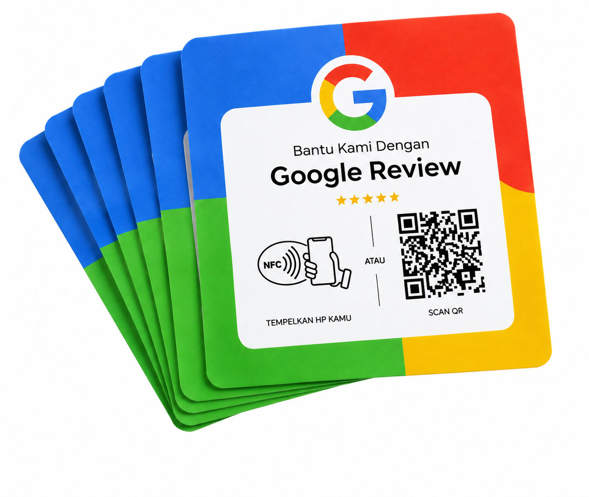
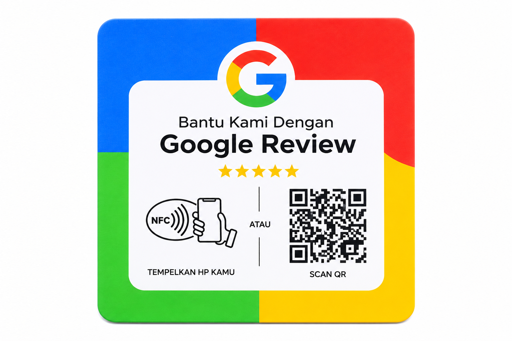
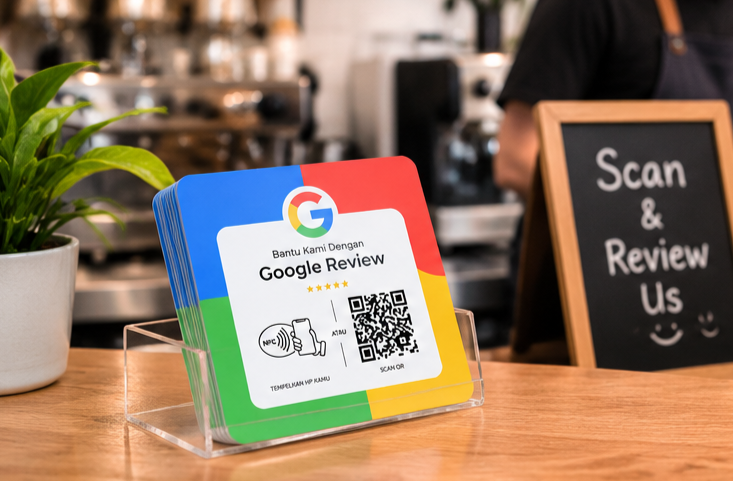

Best for everyday
NFC + QR Card
Kartu praktis untuk kasir, front desk, atau disimpan bersama kartu nama bisnis.
Tanya hargaHarga tergantung bahan & jumlah
Kartu NFC + QR praktis untuk membantu pelanggan menemukan halaman ulasan bisnis anda. Cukup tap atau scan—pengalaman memberi feedback jadi lebih simpel.

Pilih format yang sesuai dengan meja kasir, meja makan, counter, atau kebutuhan branding bisnis anda.

Kartu praktis untuk kasir, front desk, atau disimpan bersama kartu nama bisnis.
Memudahkan pelanggan untuk memberikan rating puas terhadap layanan.

Display meja supaya pelanggan mudah melihat instruksi tap atau scan saat berkunjung.
Alur yang mudah dipahami membantu pelanggan menemukan tempat untuk berbagi pengalaman mereka.
Pelanggan mengetuk kartu dengan ponsel yang mendukung NFC untuk membuka tautan yang dituju.
Kalau NFC tidak tersedia, kamera ponsel dapat digunakan untuk memindai QR pada kartu.
Pelanggan diarahkan ke halaman ulasan bisnis dan bebas menulis feedback secara jujur.
Letakkan di kasir atau meja agar mudah ditemukan setelah pelanggan menikmati layanan.
Jadikan ajakan feedback bagian sederhana dari pengalaman setelah layanan.
Tempatkan di meja resepsionis atau area yang sesuai dengan perjalanan tamu.
Sesuaikan desain kartu dengan identitas toko, studio, klinik, atau usaha lokal.
Kami akan ke tempat usaha anda. Kami bantu pilih format NFC + QR yang pas.
Masukkan nomor WhatsApp bisnis anda dan nama usaha. Tombol berikutnya akan membuka WhatsApp dengan pesan pesanan yang sudah disiapkan.